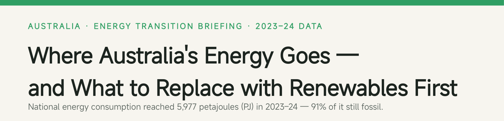
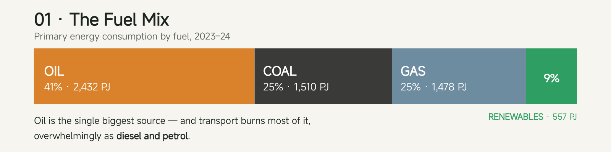
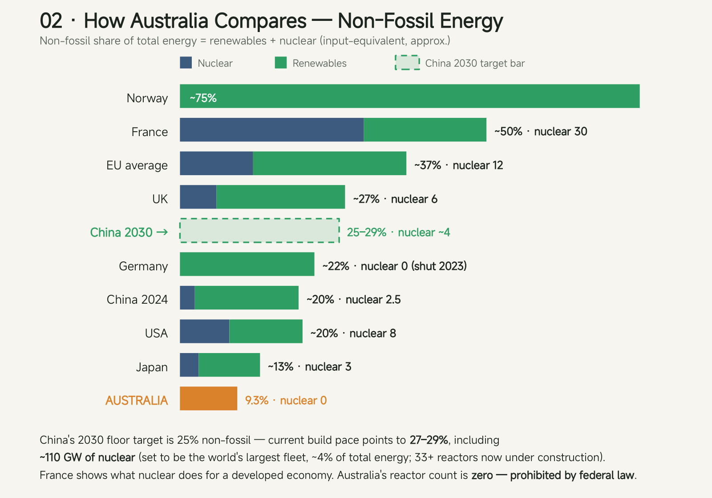
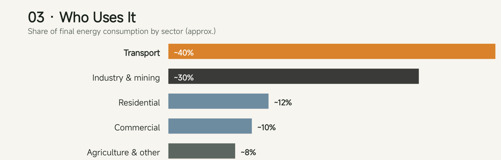
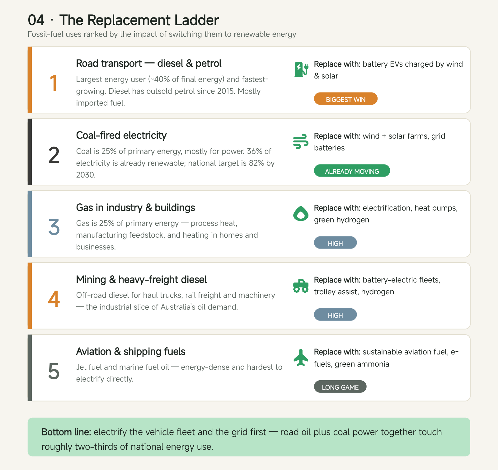

Journal · No. 02 · 19 August 2026
Australia's energy mix is still 91% fossil. That's the case for solar.
Renewables supplied half the NEM's electricity last quarter — and 9.3% of the country's total energy. The gap between those two numbers is the market.
In the last quarter of 2025, renewables supplied 51% of the electricity in the National Electricity Market — the first quarter ever above half. Measured across everything the country actually runs on, though, Australia's energy mix is still 91% fossil. Renewables are 9.3% of the total.
Both numbers are true at once, because electricity is only about a quarter of Australia's energy use. The rest is fuel burned directly: petrol and diesel in vehicles, gas under boilers and in homes, coal in industry. The grid is the one arena where the transition is genuinely underway. Almost everything else hasn't started.

The fuel mix

Australia used 5,977 petajoules of energy in 2023–24 (DCCEEW, published August 2025). The surprise is the biggest slice: oil, at 41% — not coal. Transport burns most of it, overwhelmingly as diesel and petrol, and a record share of that refined fuel now arrives by ship from overseas refineries. Coal's 25% is the slice everyone argues about; oil's 41% is the slice almost nobody does.
How Australia compares

On non-fossil share of total energy, Australia sits near the back of the developed world. France's bar is half nuclear; Australia's reactor count is zero and building one is prohibited by federal law, so that debate — whichever way it lands — resolves slowly. China passed Australia years ago and is targeting at least 25% non-fossil by 2030, on a build pace we wrote about in journal No. 01. What Australia has that most of this list doesn't: some of the best solar resource of any developed country, and no shortage of land next to existing transmission.
Who uses it

Transport is the largest energy-using sector and posted the largest increase of any sector in 2023–24 — up 5%, with air travel up 20% in the post-pandemic rebound and road transport still climbing (DCCEEW, 2023–24 data). Diesel has outsold petrol for about a decade. Oil demand is not declining on its own; something has to replace it.
The replacement ladder

Rank the fossil uses by how much energy switching them displaces and a build order falls out. Road fuel and coal power — rungs one and two — together touch roughly two-thirds of national energy use. Electrifying transport comes with a bonus: an EV delivers the same kilometres from roughly a third of the energy, so each petajoule of petrol retired needs much less than a petajoule of new supply. The grid rung is already moving — 36% renewable in 2024, a 51% NEM quarter in late 2025, an 82% national target for 2030. Green hydrogen appears on the gas and freight rungs with a caveat we always attach: electricity-to-hydrogen-to-electricity round-trips at roughly 35–45%, so hydrogen's case is fuels and feedstock, not daily storage.
Why 9.3% is the business case
One percentage point of Australia's energy mix is about 60 petajoules — roughly 16.6 terawatt-hours. Reaching the EU's current share would mean building clean supply on the order of 1,600 PJ, and nearly all of it arrives as renewable electricity, because electrification is how oil and gas demand actually gets replaced. Every EV, heat pump and electric furnace converts fossil petajoules into new electricity demand.
So the market for renewable electricity is not today's grid. It's the grid plus most of the 41% now burned as oil and much of the 25% burned as gas. Australia added about 7 GW of renewables in 2025, a record (Clean Energy Regulator, Q4 2025) — and the constraint is shifting from panels, which are cheap, to sites, storage and grid connection. That is the work Solaris is built for, on the technologies of today; the ones beyond it live on our Future page.
Coal is ancient sunlight. Oil is too — older, and imported. The 91% isn't a verdict on the transition; it's the order book.
What we're watching
- Whether grid connections and transmission can hold 2025's record ~7 GW annual pace through 2030.
- Whether EV uptake bends Australia's road-fuel curve this decade — as of 2023–24 it was still rising.
- Whether industrial heat pumps and electric furnaces reach cost parity with gas process heat before the 2030s.
Sources · dated: DCCEEW, Australian Energy Update 2025 (2023–24 data, Aug 2025) · Clean Energy Regulator, Quarterly Carbon Market Report Q4 2025 · pv magazine, 13 Jan 2026 · Energy Institute Statistical Review of World Energy 2025; Eurostat; Bruegel (international shares, 2024) · IAEA PRIS / WNA (nuclear capacity). Figures: Flow Energy briefing graphics from the sources above; shares approximate, accounting methods vary; 1 PJ ≈ 278 GWh.